Start here: the 60-second primer
Key terms. Jump = p_hit right after an event minus p_hit right before it (bigger = the model noticed). Random control = the same measurement at random moments; a result only counts if it beats this. AUC = how well a signal separates event moments from other moments: 0.5 = coin flip, 1.0 = perfect. t-SNE = a 2-D map where similar things sit near each other.
Data. 932 OmniPro samples where audio is not required (none + helpful), 699 videos, ~180k seconds of model output, vision-only System 3 (frozen Qwen3-VL-8B).
Headline
Bottom line: re-asking the same frozen model "did a new instance just start?" over the last 8 frames raises end-to-end time-F1 from 0.21 (System 3 actual) / 0.26 (System 3 p_hit, fitted) to 0.43 on all 932 videos (+0.18, CI +0.16–0.19), no training. See sections 12–14.
p_hit latches. It detects the first occurrence of the target sharply and on time, then stays high for the rest of the video, so later occurrences are invisible. It behaves like a "has it happened yet?" detector, not a "is a new one happening now?" detector.
(random time: +0.05)
(random post-latch: −0.01)
56% by > 0.2
44% of ticks ≥ 0.8 — no headroom
5 signal transforms tried, none work
1. The latch, in one picture
Each row = one video, aligned so 0 s = the first ground-truth event. Colour = p_hit (dark = low, bright = high). Ticks = later events. Rows sorted by task, then by when p_hit first crosses 0.5. Interactive version (built in your browser from the raw traces) — zoom, hover:
static version (all tasks)
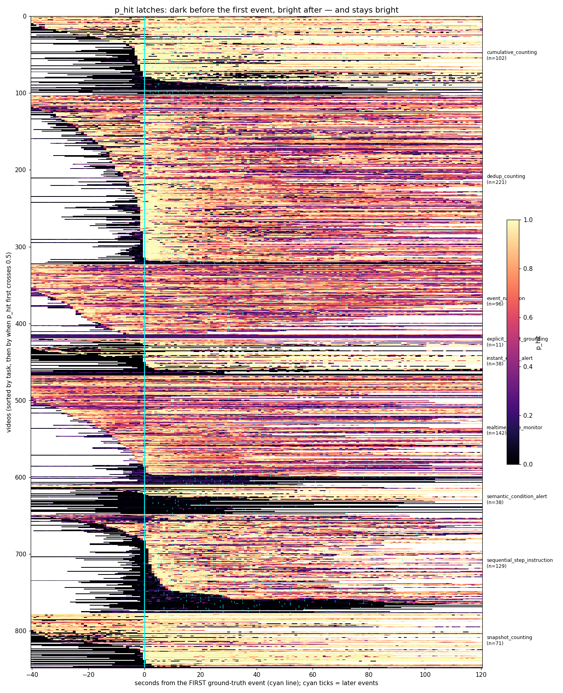
2. Is there still a signal for event #2 / #3?
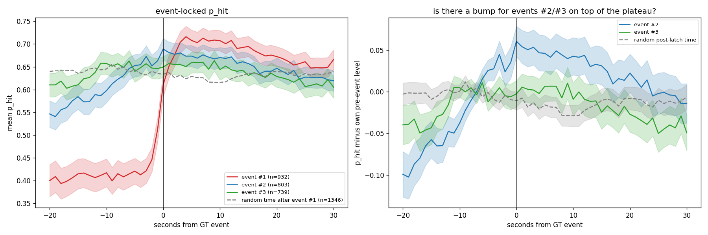
| bump (after − own level before) | random post-latch time | videos with bump > 0.1 | |
|---|---|---|---|
| event #1 | +0.28 | +0.05 | 56% |
| event #2 (n=803) | +0.050 ± 0.017 | −0.013 ± 0.008 | 27% (chance 15%) |
| event #3 (n=739) | +0.000 ± 0.012 | −0.013 | 19% (chance 15%) |
Event #2 has a small real bump, partly a slow ramp from event #1 (they are often close together). Event #3 has none. Within the latched region, no transform of the signal recovers later events:
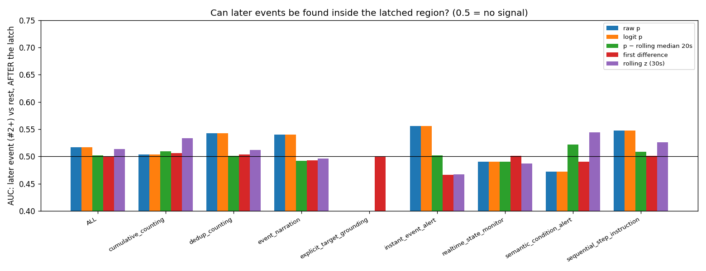
| signal (after the latch) | AUC later event vs rest | random control |
|---|---|---|
| raw p_hit | 0.517 | 0.489 |
| logit p_hit | 0.517 | 0.489 |
| p − 20 s rolling median | 0.502 | 0.495 |
| first difference | 0.501 | 0.502 |
| rolling z-score (30 s) | 0.514 | 0.497 |
3. Video explorer — every trace, interactive
Black line = p_hit. Green bands = ground-truth event ±3 s (hover for description). Dots = fires (green = hit, red = over-fire). Hover the line to see what the model wrote in seen at that second.
4. Where it works and where it fails (per task)
| task | n | jump at event #1 (random) | re-rise at #2 | videos with AUC ≥ 0.7 | verdict |
|---|---|---|---|---|---|
| sequential_step_instruction | 148 | +0.50 (+0.08) | +0.17 | 11% | detects #1, partly re-fires — only task that does |
| instant_event_alert | 38 | +0.50 (+0.09) | −0.01 | 18% | clean one-shot detector (earlier failure was audio) |
| cumulative_counting | 102 | +0.45 (+0.12) | +0.05 | 30% | detects #1, then latched |
| snapshot_counting | 73 | +0.42 (+0.15) | — | 36% | works (one event per video) |
| explicit_target_grounding | 12 | +0.31 (+0.06) | — | 25% | works (one event) |
| dedup_counting | 283 | +0.27 (−0.00) | +0.04 | 27% | spike then slow decay |
| semantic_condition_alert | 38 | +0.23 (+0.12) | −0.00 | 18% | mostly drift |
| realtime_state_monitor | 142 | +0.08 (+0.01) | −0.01 | 11% | no response, flat ~0.6 |
| event_narration | 96 | −0.03 (−0.01) | −0.03 | 1% | no response, flat ~0.65 |
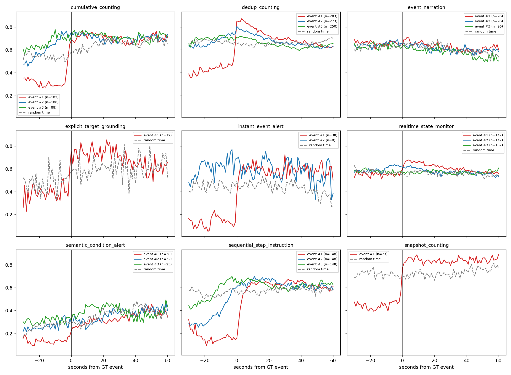
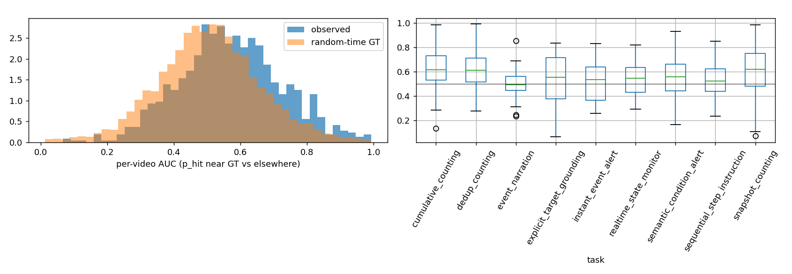
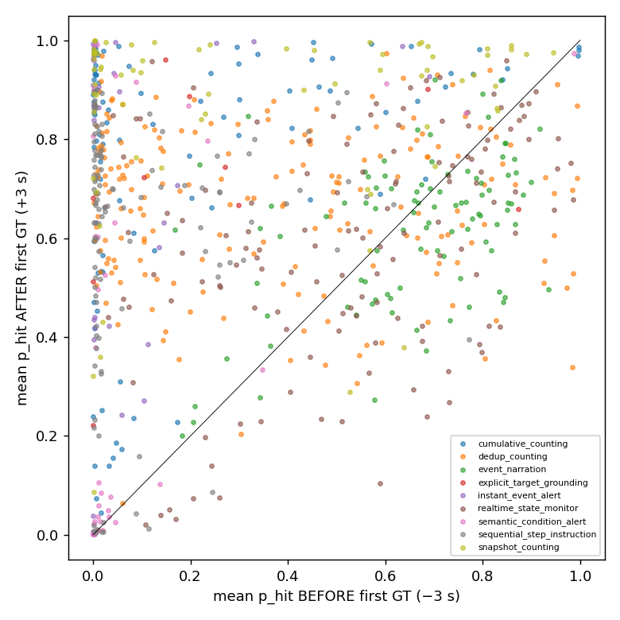
What drives p_hit? Regressing p_hit on frame features within each task, the strongest predictor is "is this after the first event?" (standardised weight 0.11–0.23 in counting, steps, alerts) — larger than "is an event happening now?" (0.02–0.08). Query–frame similarity and visual change add almost nothing.
5. Frame embeddings (SigLIP2) — t-SNE
6,300 frames (≤900 per outcome role). Click a point to see the frame, the question, what the model wrote, and the GT event. Roles: hit fire within ±3 s of an event · event_caught/event_missed event frame with/without a fire · overfire_early fire before event #1 · overfire_late fire after event #1, far from any event (the flood) · high_nofire p ≥ 0.8 far from events · quiet p < 0.2 far from events.
Result: outcomes do not separate by image content. A classifier on the frame embedding (held-out videos) predicts over-fire vs hit at AUC 0.50 and missed vs caught at 0.50; only hit vs quiet separates a little (0.60). Over-fires are not caused by the picture — they are caused by the latch state. Over-fire frames are visually more static (frame change 0.076 vs 0.109 for hits).
static t-SNE figures
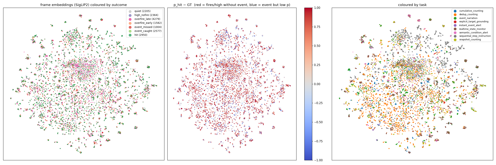
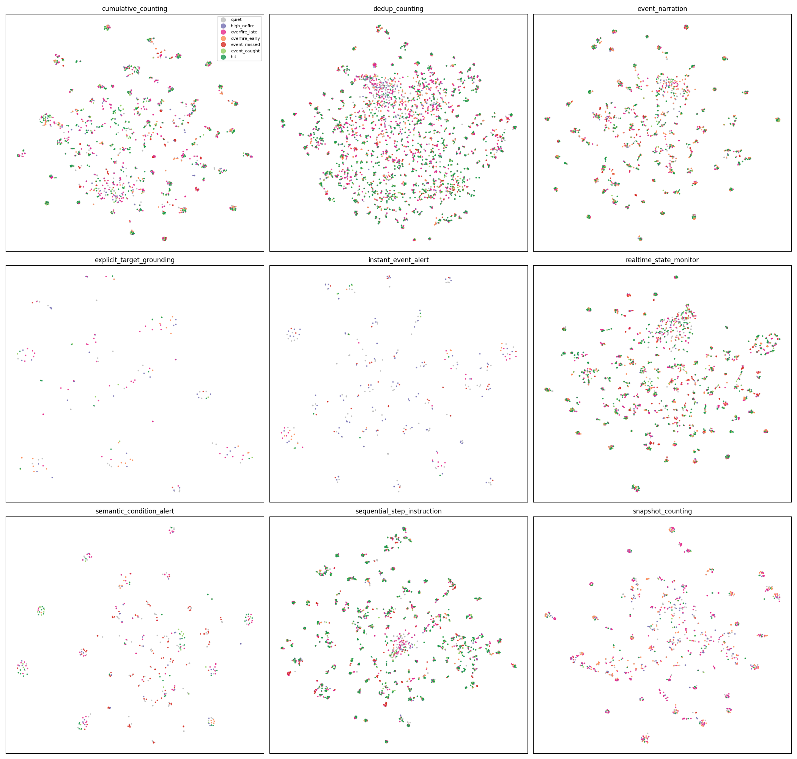
Query & GT-event embeddings (interactive t-SNE)
Every question (932) and every ground-truth event description (3,713) embedded with the SigLIP2 text encoder, projected with t-SNE. Hover a dot to read the text.
6. What is in the frame
- Quiet (p low) frames are dominated by logos, intro/title cards, animated text, black screens — the model correctly stays silent on non-content.
- Hits have people performing / being interviewed, podiums, scores, hands, trays — real task content.
- Over-fires after the latch look like ordinary task content (same scene, nothing new) — not a distinct visual category.
- Missed events by modality: visual 25%, visual+speech 27%, visual+sound 47%, visual+sound+speech 70% — events cued by sound are missed about twice as often even in the none/helpful set.
Full tables: phit_analysis/step4/summary.md (zero-shot tags and the model's own seen words, within-task log-odds).
7. Real examples (contact sheets)
9. More hypotheses — tested
Beyond the latch we tested ten further explanations. Verdict first, details below.
| # | hypothesis | verdict | evidence |
|---|---|---|---|
| H1 | p_hit drifts up with time even with no event | partly | median slope before any event +0.03/min; 65% of videos drift up; 77% cross 0.5 at least once before the first event |
| H2 | the latch never releases | mostly true | after event #1 only 39% of videos ever stay below 0.5 for ≥10 s; snapshot counting 9%, condition alerts 74% |
| H3 | event #2 is visible when p_hit has room to rise | TRUE — key finding | p_hit before event #2 <0.3 → jump +0.17 (random +0.05); 0.3–0.5 → +0.16 (+0.03); 0.5–0.7 → +0.06; >0.7 → none. Events #1 and #2 <10 s apart: +0.11, otherwise ≈0 |
| H4 | early latch because the target is already on screen | weakly | 54% of videos latch >3 s before event #1 (median 27 s early, often at t≈4 s on intros/title cards); question words in the model's description at the crossing 11% vs 6% on quiet frames |
| H5 | the model's own description notices later events | no | novelty of the description: AUC 0.555 vs random 0.536 |
| H6 | latch is a quirk of one System 3 config | no | present in every config (jump at event #1: full8 +0.20, full9 +0.30, iea +0.62) |
| H7 | sees objects/appearances better than actions | TRUE (first events) | first event caught: appearance 87%, speech-cued 87% vs action 66%, count 58%; jump +0.32 vs +0.24 |
| H8 | brief events missed, long-lasting caught | no | first events whose scene changes within 2 s: caught 77%; scenes stable >10 s: 67%. Brief is not worse. |
| H9 | events with little visual change are missed | TRUE | visual change <0.05 → jump +0.13, caught 63%; change >0.3 → jump +0.33, caught 78% |
| H10 | missed when the described thing was already visible before | TRUE | least visible before → jump +0.31, caught 79%; most visible before → +0.18, 65%. When the described thing newly appears → +0.32 |
"caught" for later events is inflated by over-firing (the system fires constantly after the latch), so use the jump as the honest measure.
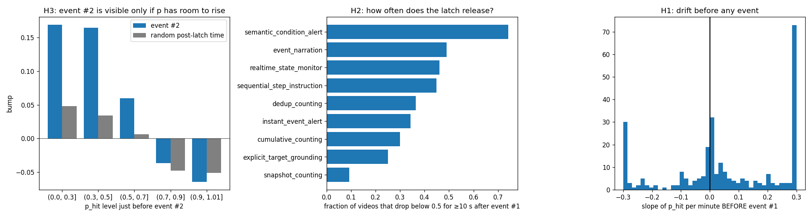
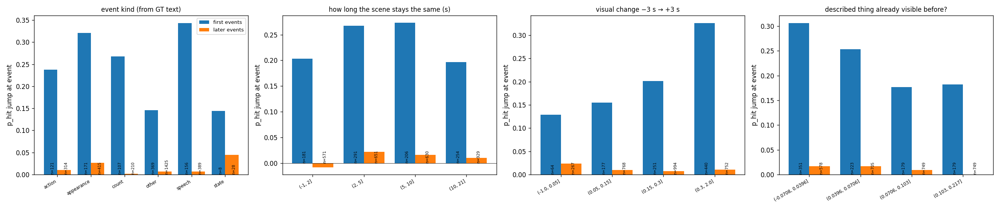
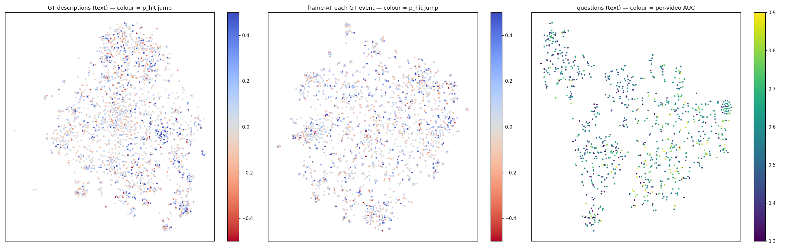
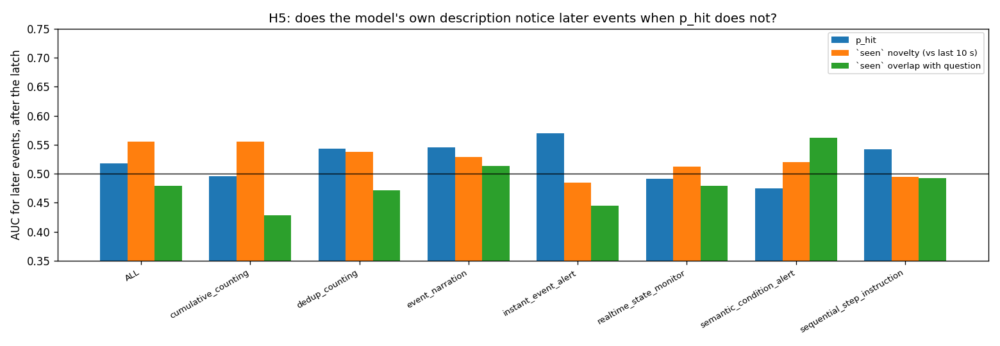
Take-away: perception is not the main bottleneck for later events — when p_hit starts low, event #2 is detected almost as well as event #1. The bottleneck is that p_hit saturates and stays saturated. Among first events it is best at visually salient appearances and weaker on actions, counts and changes that barely alter the picture.
10. Round 2 hypotheses (H11–H18)
| # | hypothesis | verdict | evidence |
|---|---|---|---|
| H11 | longer videos / later events are detected worse | TRUE | video <60 s: jump at event #1 +0.35, AUC 0.63 → videos >8 min: +0.16, AUC 0.50 (chance). Event #1 in the first 15 s: jump +0.40; after 30 s: +0.16. The longer the model has watched, the weaker its reaction. |
| H12 | dense-event videos saturate more | no | jump at event #1 is similar across densities (+0.19 – +0.35); densest videos (>4 events/min) are actually best (AUC 0.61) |
| H13 | p_hit reacts late to the first event | no — it is on time or already on | 51% of videos are already ≥0.5 before event #1 (false start). In the rest the crossing is on time (median latency 0 s). Narration 97% and state monitor 75% are "already on"; sequential steps only 19%. |
| H14 | question phrasing matters | somewhat | counting questions: median AUC 0.62 vs 0.52; questions about a person 0.60 vs 0.55; questions about a change 0.52 vs 0.57; longer questions slightly worse (ρ = −0.16) |
| H15 | p_hit carries no information after the latch | TRUE — key finding | before event #1, ticks with p>0.9 are near an event 30% of the time vs 9% for p<0.1. After the latch, every p bin gives 12–14%: p=0.05 and p=0.95 mean the same thing. |
| H16 | a scene change releases the latch | slightly | after a scene change (model's description changes) p drops by >0.2 in 13% of cases vs 8% without |
| H17 | the model rewriting its own probe question resets p | barely | mean change −0.047 vs −0.036 when the question stays the same |
| H18 | a smarter gate on the same p_hit fixes it | no | time-F1: raw 0.5 gate 0.213; re-baseline after each fire 0.189; relative to 60 s rolling minimum 0.219. Gate tricks cannot add information that is not in the signal. |
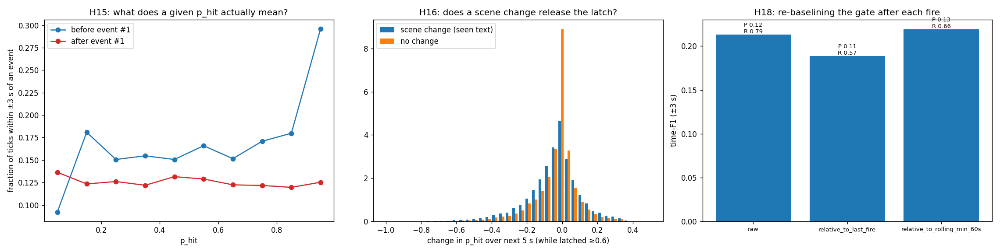
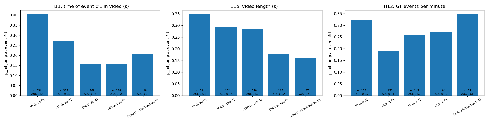
Take-away round 2: the signal is informative until the first latch and uninformative after it (H15); half of the videos latch before any event at all (H13); and the reaction weakens the longer the model has been watching (H11). All three point to the same lever: keep the probe's context fresh (short window or reset), rather than tuning gates (H18).
11. Round 3: the first event, false starts, triage (H19–H21)
| # | question | answer |
|---|---|---|
| H19 | If the system only had to catch the first event, how often would p_hit cross 0.5 at the right moment? | 34% on time (±3 s), vs 4% for a random crossing — 8.6× better than chance. But 51% false-start (cross before any event), 10% late, 5% never. Best: dedup counting 54% on time, sequential steps 40%, cumulative 38%, instant alert 37%. Worst: narration 0% (97% false start), condition alert 13% (42% never). |
| H20 | Can the first 20 s tell us whether a video will "work"? | Somewhat: AUC 0.61. Videos that end up working start quiet (mean p 0.17 in the first 20 s) vs 0.36 for the rest. A model that starts excited stays excited. |
| H21 | What is on screen at a false start? | The model's own description at false starts is enriched for intro, logo, title card, text, screen, background, close-up view, parked vehicles — non-content and static scenery. At on-time crossings it describes people and actions: man, person, girl, hands, speaking, walking, sitting, shirt, bowl. |
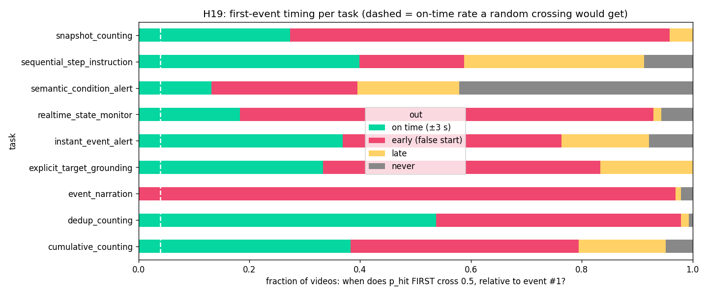
Take-away round 3: as a first-event detector the model is 8–9× better than chance, which is the strongest positive result here. Its two failure modes are false starts on intros/logos/static scenery (fixable with hard negatives: "title card visible, nothing happened") and the latch afterwards.
12. Experiment: re-asking the question differently (GPU, 105 videos)
To test the explanations above directly, we re-ran the same frozen Qwen3-VL-8B ourselves on 105 none/helpful videos (every task, ≥2 events, ≤5 min), every 2 s, with different context windows and question framings, and compared with System 3's own p_hit on the same videos.
| condition | what the model sees | question |
|---|---|---|
| system3 | whole history in a KV cache | System 3's own controller/probe |
| now_W2 / now_W8 / now_W32 | last 2 / 8 / 32 frames | "Is it happening right now, in the latest frames?" |
| ever_W32 | last 32 frames | "Has it happened at any point in these frames?" |
| system3 | now_W2 | now_W8 | now_W32 | ever_W32 | |
|---|---|---|---|---|---|
| mean P(yes) after event #1 (latch level) | 0.59 | 0.21 | 0.27 | 0.34 | 0.67 |
| false start (switches on before event #1) | 50% | 27% | 25% | 23% | 27% |
| jump at event #1 / #2 / #3 | +0.19 / 0.00 / −0.01 | +0.15 / +0.05 / 0.00 | +0.21 / +0.05 / +0.07 | +0.21 / +0.08 / +0.04 | +0.39 / +0.13 / +0.06 |
| median per-video AUC (whole / after event #1) | 0.56 / 0.53 | 0.61 / 0.59 | 0.61 / 0.60 | 0.58 / 0.57 | 0.56 / 0.53 |
Paired differences vs system3 on the same 105 videos (bootstrap 95% CI): latch level now_W8 −0.32 [−0.39, −0.24], ever_W32 +0.08 [−0.00, +0.16]; false starts now_W8 −26 points [−37, −14]; mean AUC now_W8 +0.02 [−0.02, +0.06] (not significant), now_W2 −0.05 [−0.09, −0.01].
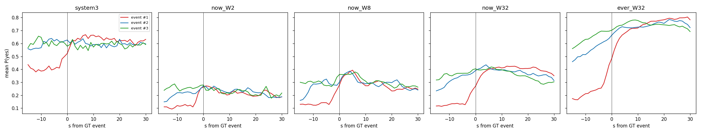
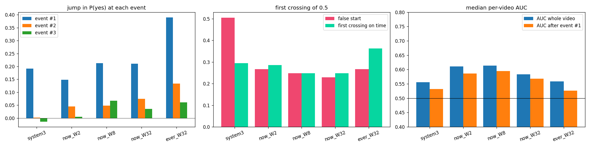
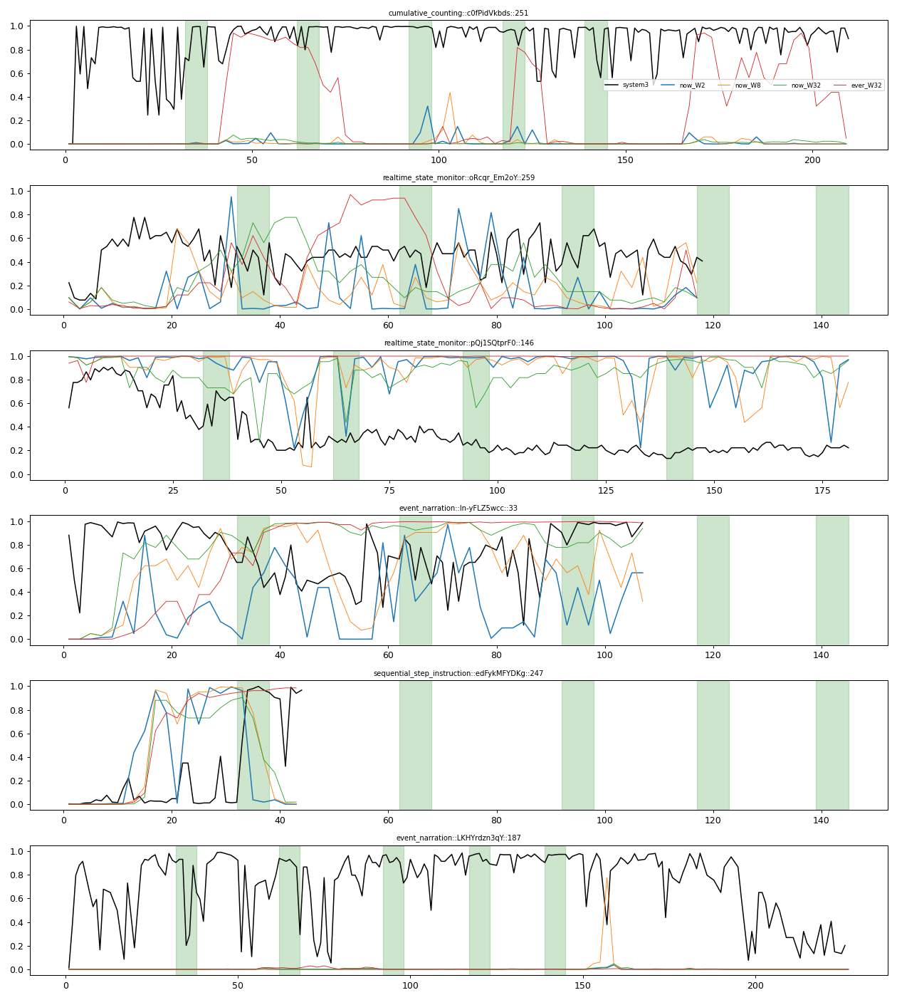
What the experiment proves
- The latch is caused by the question's meaning, not by long memory. With the same 32-frame window, asking "has it happened?" latches (0.67) while asking "is it happening now?" does not (0.34). Shorter windows lower it further.
- Half of the false starts are a System 3 artefact. Every fresh probe, even the latch-prone one, halves false starts (50% → ~25%) — so System 3's prompt / in-context examples / long cache push it to switch on early.
- Removing the latch does not by itself make the model a much better event detector. AUC improves only slightly (+0.02, not significant) and later-event jumps stay small (+0.05 – +0.08). Once the saturation is gone, the remaining limit is perception/timing of the event itself — consistent with H7/H9/H10 (actions and subtle changes are hard).
- 2 frames is too little context (AUC drops); 8 frames is the sweet spot here.
Implication: fix the question framing ("happening now" / "new since last report") to remove the latch and halve false starts — cheap, no training. Then the real gains must come from better perception of actions and subtle changes: that is where training data should go.
13. Follow-up experiment: ask for a new instance; higher resolution
Two more conditions on the same 105 videos: new_W8 — last 8 frames, "Compare the last frame with the earlier ones: did a new instance just start (not something already visible)?" — and now_W8_hires — the "now" question with 768-px instead of 448-px frames.
| paired difference (same 105 videos, bootstrap 95% CI) | AUC whole video | AUC after event #1 | jump at later events |
|---|---|---|---|
| new_W8 vs System 3 | +0.098 [+0.064, +0.135] | +0.115 [+0.071, +0.161] | +0.149 [+0.091, +0.208] |
| new_W8 vs now_W8 | +0.075 [+0.050, +0.102] | +0.081 [+0.051, +0.112] | +0.089 [+0.047, +0.134] |
| now_W8_hires vs now_W8 | −0.004 [−0.015, +0.006] | +0.000 [−0.011, +0.013] | +0.013 [−0.001, +0.028] |
| median AUC by task | System 3 | now_W8 | new_W8 |
|---|---|---|---|
| instant_event_alert | 0.55 | 0.70 | 0.80 |
| cumulative_counting | 0.68 | 0.83 | 0.85 |
| dedup_counting | 0.60 | 0.68 | 0.74 |
| semantic_condition_alert | 0.54 | 0.69 | 0.69 |
| realtime_state_monitor | 0.60 | 0.57 | 0.61 |
| explicit_target_grounding (n=3) | 0.52 | 0.58 | 0.59 |
| sequential_step_instruction | 0.49 | 0.48 | 0.55 |
| event_narration | 0.48 | 0.53 | 0.53 |
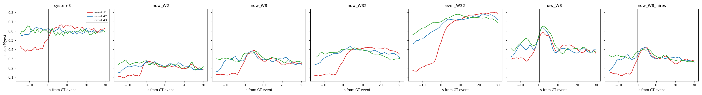
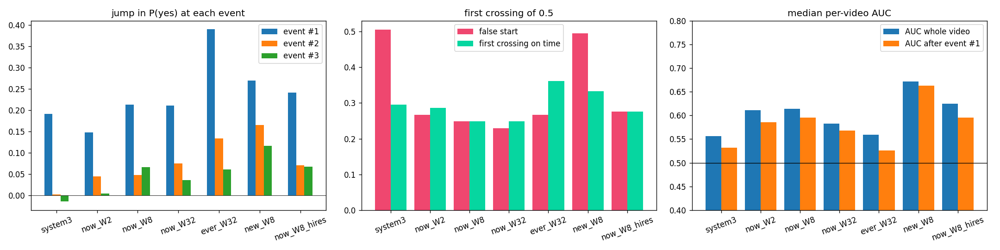
What this adds
- Asking for a new instance over a short window is the best probe we found: +0.10 AUC over System 3, and later events become visible (jump +0.15). On instant alerts and counting it reaches AUC 0.74–0.85.
- Resolution is not the bottleneck: 768 px gives no gain over 448 px.
- Trade-off: new_W8 brings false starts back to 50% (the start of the video looks "new"). Pair it with a short warm-up or the hard negatives from H21.
- Narration, state monitoring and step instructions remain near chance under every framing — these need better definitions of "event" and/or training data, not prompt changes.
14. End-to-end: does the better probe give a better benchmark score?
Each signal goes through the same simple gate (fire when it rises past a threshold, optional silence period and warm-up). The gate settings are chosen per task by 5-fold cross-fitting over videos, so no signal is tuned on the videos it is scored on. Score = OmniPro-style time-F1 (fires matched one-to-one to GT within ±3 s). Same 105 videos.
| signal | time-F1 | precision | recall | fires (GT = 456) |
|---|---|---|---|---|
| System 3 — its actual logged fires | 0.261 | 0.16 | 0.63 | 1,740 |
| System 3 p_hit, same fitted gate | 0.232 | 0.20 | 0.28 | 640 |
| "happening now?" last 8 frames | 0.296 | 0.34 | 0.26 | 347 |
| "happening now?" last 2 frames | 0.351 | 0.38 | 0.32 | 388 |
| "new AND now" (product) | 0.359 | 0.43 | 0.31 | 325 |
| "did a NEW instance just start?" last 8 frames | 0.406 | 0.36 | 0.47 | 604 |
Paired bootstrap over videos: new_W8 − System 3 p_hit = +0.17 time-F1 (95% CI +0.11 to +0.23); new×now +0.14 [+0.07, +0.20]; now_W8 +0.09 [+0.03, +0.15].
| time-F1 by task | System 3 actual | new_W8 |
|---|---|---|
| cumulative_counting | 0.27 | 0.62 |
| instant_event_alert | 0.25 | 0.58 |
| sequential_step_instruction | 0.39 | 0.45 |
| dedup_counting | 0.20 | 0.41 |
| semantic_condition_alert | 0.15 | 0.37 |
| realtime_state_monitor | 0.26 | 0.32 |
| explicit_target_grounding (n=3) | 0.18 | 0.30 |
| event_narration | 0.25 | 0.29 |
First event only
If each video had only its first event (one fire, one GT): System 3 0.33, "new" probe 0.36, "has it happened?" probe 0.43 (thresholds picked in-sample for all). For a single event the latching wording is actually best; the "new" wording wins when events repeat. The common failure remains switching on too early (System 3 in 45% of videos).
15. The "new instance" probe, analysed like System 3 (932 videos)
| System 3 | new probe | |
|---|---|---|
| jump at event #1 / #2 / #3 | +0.24 / +0.05 / 0.00 | +0.34 / +0.25 / +0.20 |
| mean P(yes) after event #1 | 0.66 (latched) | 0.29 |
| after event #1: near an event when P(yes)>0.9 vs <0.1 | 13% vs 14% (no information) | 32% vs 5% |
| later events with a jump > 0.1 | 21% | 54% |
| first crossing of 0.8: on time / false start / late | 35% / 46% / 12% | 36% / 32% / 23% |
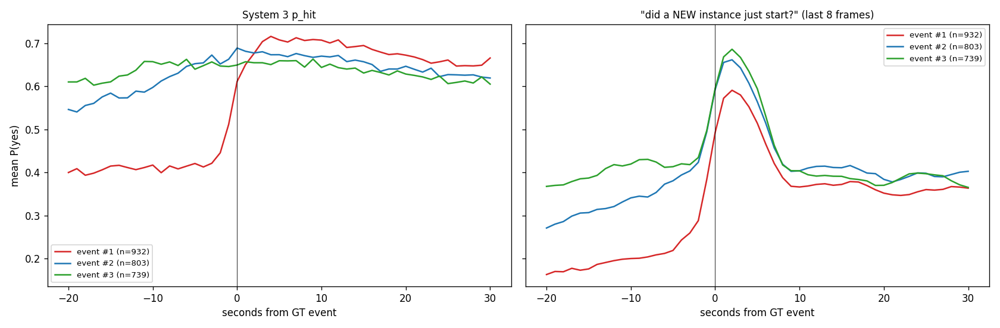
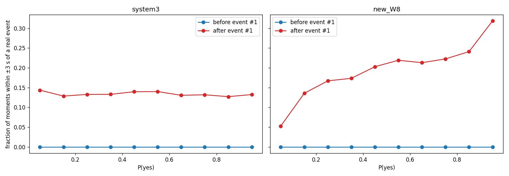
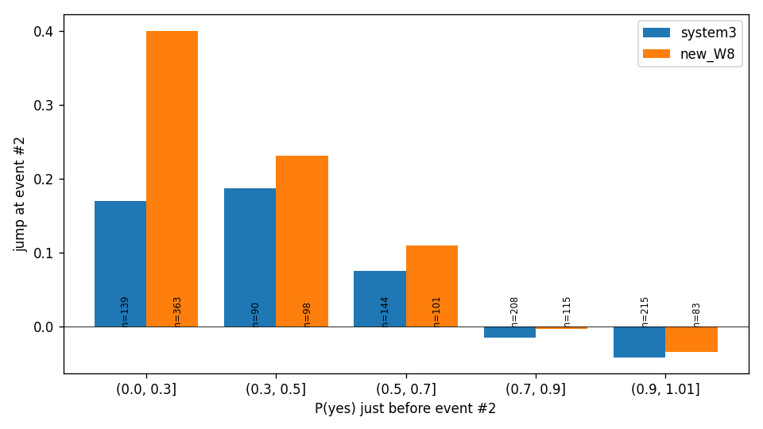
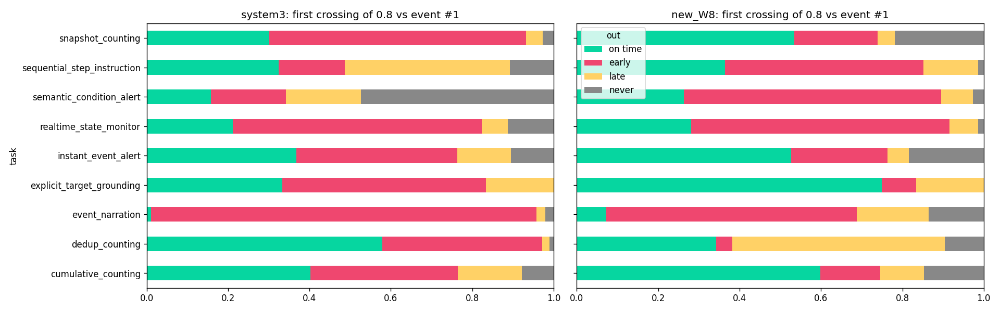
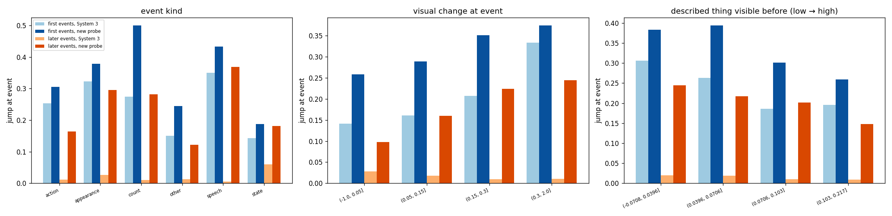
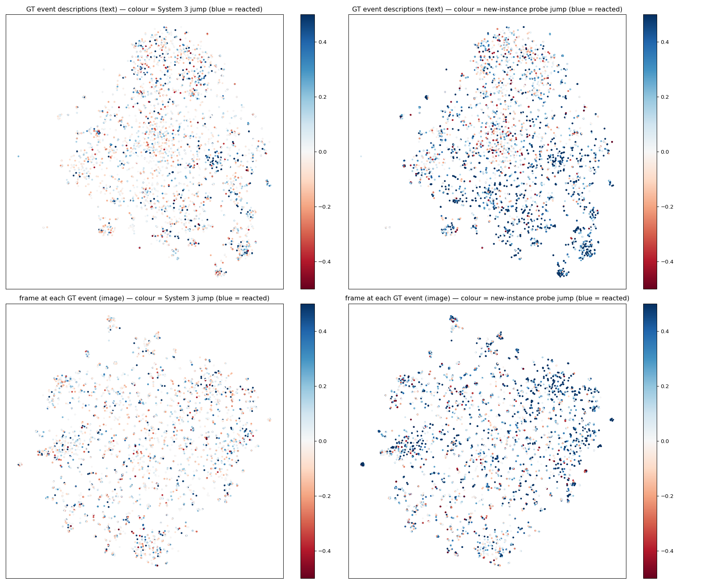
Take-away: the new question removes the latch at full scale; later events become visible and P(yes) is informative after the first event. Remaining gaps: actions, subtle changes, sequential steps and narration; false starts shift tasks rather than disappear (experiment A2 running).
16. What causes System 3's false starts? Its instruction prompt (experiment, 105 videos)
Starting from a plain probe, we added one System 3 component at a time (same videos, frames, model).
| what was added | false starts | mean P(yes) before event #1 | paired change (95% CI) |
|---|---|---|---|
| plain "has it happened?", 32 frames | 27% | 0.13 | — |
| + System 3 instruction prompt | 48% | 0.35 | +21 pts [+11, +31] |
| plain "happening now?", 8 frames | 25% | 0.10 | — |
| + System 3 instruction prompt | 55% | 0.39 | +31 pts [+21, +41] |
| plain "happening now?", 32 frames | 23% | 0.10 | — |
| + longer memory (64 frames) | 23% | 0.10 | 0 [0, 0] |
| System 3 (reference) | 51% | 0.33 |
Hard negatives in the question (telling the "new" probe that intros, logos, title cards are not new): false starts 49% → 51%, time-F1 0.406 → 0.404 — no effect. Listing negatives in words does not work; a warm-up or training is needed.
17. Rigor round: three findings re-tested on both models (932 videos)
Task fixed effects, within-task / within-video comparisons, cluster-robust regressions, bootstrap CIs, permutation tests.
| finding | System 3 | new probe | verdict |
|---|---|---|---|
| sound-cued events caught less (odds ratio, controlled) | 0.88 [0.63, 1.24], p=0.48 | 0.59 [0.41, 0.85], p=0.004 | real for the new probe (−15 pts); hidden by the latch in System 3 |
| calm first 20 s → video works (Spearman, within task) | −0.01, p=0.82 | −0.14, p=0.006 (overall −0.37) | real for the new probe (calmest quarter works 77% vs 31%); not real for System 3 |
| AUC falls with video length (per log-length, controlled) | −0.057, p=8e−9 | +0.011, n.s. | System 3 only: AUC 0.61 (<1 min) → 0.50 (>8 min); new probe 0.65 → 0.79 |
| drift of P(yes) before the first event | +0.047/min | +0.004/min | System 3 drifts up |
Cause of the length effect: it remains in System 3 videos without a false start (−0.109, p=1e−11), so it is not early latching; the memory-free new probe shows no decline. ⇒ System 3's long accumulated context + drift causes it.
18. Error quadrants: which failure to fix first
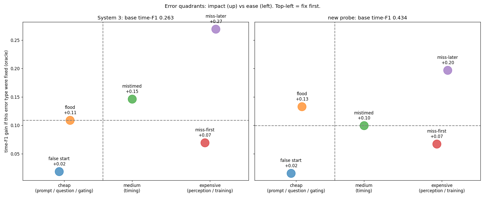
| System 3 | new probe | |
|---|---|---|
| base time-F1 | 0.263 | 0.434 |
| fires: hit / false start / mistimed / flood | 21% / 10% / 24% / 46% | 37% / 6% / 18% / 39% |
| gain if fixed: flood (cheap) | +0.11 | +0.13 |
| gain if fixed: mistimed (cheap-medium) | +0.15 | +0.10 |
| gain if fixed: false start (cheap) | +0.02 | +0.02 |
| gain if fixed: missed first event (training) | +0.07 | +0.07 |
| gain if fixed: missed later events (training) | +0.27 | +0.20 |
| gain if content were perfect (105-video judge) | +0.20 | +0.19 |
19. Content and joint F1 (105 videos, judged by an opencode session)
| System 3 | new probe | |
|---|---|---|
| time-F1 | 0.26 | 0.41 |
| content accuracy of matched fires | 23% | 54% |
| joint F1 (right time AND content) | 0.06 | 0.22 |
20. Change gate
Multiplying P(yes) by visual change: System 3 +0.046 time-F1 [+0.032, +0.061] (it ignores change by itself); new probe +0.009 (n.s.; it already follows change). Per task it helps grounding (0.53→0.71) and narration (0.17→0.28) for the new probe but hurts condition alerts.
21. What fixes work beyond the new question? (932 videos unless noted)
| attempt | Δ time-F1 (95% CI) | verdict |
|---|---|---|
| gate tricks on the new probe: wider refractory, fire at peak, lag shift, all combined | −0.004 to 0.000 (n.s.) | no |
| gate tricks on System 3 | +0.016 [+0.006, +0.025] | tiny |
| change gate on System 3 | +0.046 [+0.032, +0.061] | yes (System 3 only) |
| learned combination (new + now + change + System 3 + time, per task, cross-fitted) | +0.042 [+0.027, +0.058] → 0.469; precision 0.36→0.48 | yes |
| "new since your last report at t=X" probe (105 videos) | −0.041 [−0.080, −0.006] | worse: more conservative, loses recall |
| System 3 length effect after removing drift | slope −0.048 → −0.024 | drift explains half; the rest is lost discrimination in long context |
Lesson: one prompt change (has-happened → new instance) gives +0.18; further prompt and gate tricks do not help; combining complementary signals helps (+0.04); the remaining errors (missed later events, wrong content) need training.
8. Suggested improvements (not implemented — analysis only)
- Best tested probe (section 13): "did a new instance just start?" over the last 8 frames: +0.10 AUC over System 3 (CI +0.06–+0.14) and later events become visible. Cheap, no training.
- Tested (section 12): asking "is it happening right now?" over the last 8 frames removes the latch (post-event level 0.59 → 0.27) and halves false starts (50% → 25%), but only slightly improves event ranking (AUC +0.02). Framing fixes the latch; perception is the next bottleneck.
- Restore headroom. H3: event #2 is detected when p_hit starts low. Anything that pushes p_hit back down after a fire (re-asking relative to the last report, short-window probe, context reset) should make later events visible.
- Change the question, not the gate. Ask "is there a new X since t_last?" (insert the last report time) or "is X happening right now?". The current question measures "has X ever happened", which saturates.
- Short-window probe. Probe over the last N seconds instead of the full cache — tests whether the latch is memory of event #1.
- Per-event reset. After a fire, require p to fall and re-rise, or reset the probe context.
- Training data to collect: (a) multi-event clips with per-event "new occurrence" labels; (b) hard negatives: target visible / already happened, nothing new; (c) state-change clips for state-monitor and narration (no response today); (d) sound-cued visual events.
- Hard negatives for false starts: intros, logos, title cards, static establishing shots, labelled "nothing yet" (H21).
- Keep what works: one-shot tasks (snapshot, grounding, instant alert) already behave well — use them as positive examples.
- Scope: report vision-only claims on none + helpful; audio-required events are essentially undetectable by the VL arm.
Code: phit_analysis/*.py. Data: Clariden $SCRATCH/phit_analysis/. Ticks rebuilt from ~/backups/system_3_submission.zip + system3_bench_eval_20260925.zip; runs mix several System 3 configs (full8, full9, iea_*).